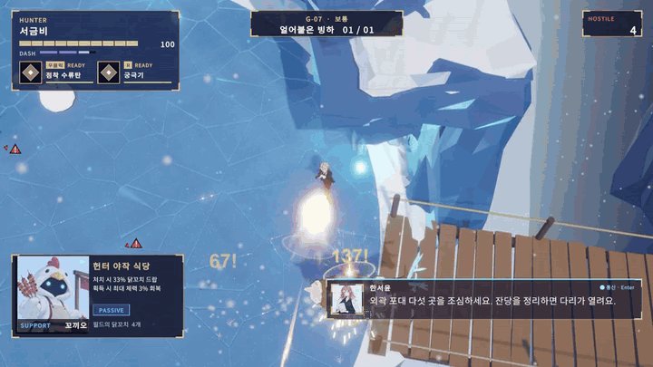

기업협약 · 3D 액션 로그라이트 · 개발 중
제로게이트ZERO GATE
각자 만들고 싶은 캐릭터를,
하나의 게임에 맞추기.
팀원의 애정을 끌어내기 위해 캐릭터별 기획을 맡겼습니다. 진행 속도와 톤에 차이가 생기자 컨셉·전투 시스템 작업을 재분배했습니다. 완료 시점을 비슷하게 맞추고, 논의 과정에서 게임의 방향도 함께 정리했습니다.
2026.10 — 12 · 팀장 / PD / 콘텐츠 기획